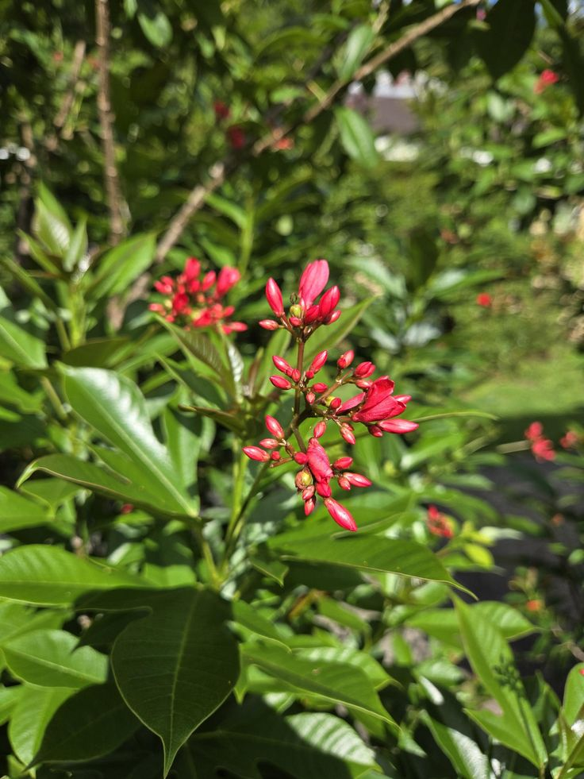
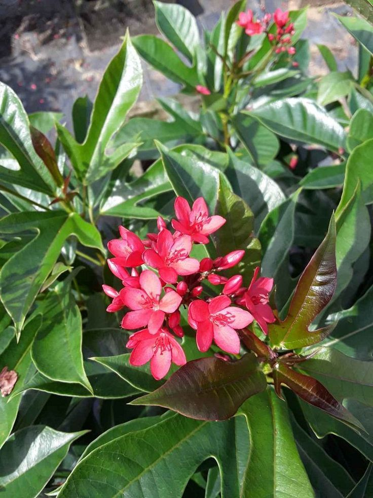
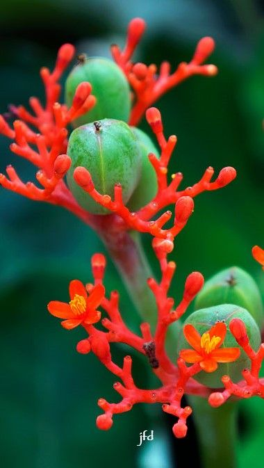
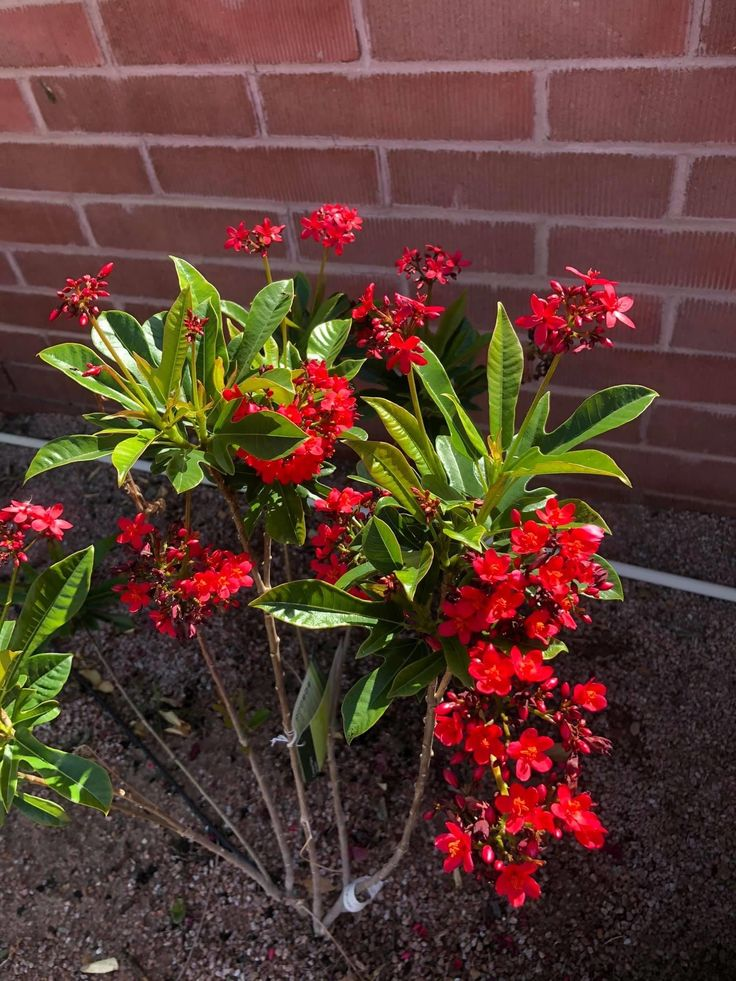

Jatropha podagrica (Buddha Belly Plant)


General Information
Scientific Name: Jatropha podagrica
Family: Euphorbiaceae
Type: Succulent herbaceous plant
Height: 1 to 3 feet tall
Uses of Jatropha podagrica:
- Ornamental: Grown for its swollen stem and coral-like red flowers.
- Indoor Display: Popular as a potted plant in tropical and subtropical gardens.
- Botanical Interest: Used in educational displays for its unusual structure.
Medicinal & Traditional Uses:
- Used in folk medicine for treating skin conditions and infections.
- Latex is traditionally applied to wounds (caution advised).
- Toxic: All parts of the plant are poisonous if ingested.

Description
Jatropha podagrica is a striking tropical plant with a thick, swollen stem resembling a bottle or Buddha’s belly. It produces bright coral-red flowers in umbels above large, lobed leaves. The flowers attract butterflies and hummingbirds in warmer regions.
Habitat & Growth
- Native Regions: Central America
- Soil: Well-draining, sandy or loamy soil
- Sun: Prefers full sun to partial shade
- Watering: Moderate; drought-tolerant once established

Propagation
Jatropha podagrica can be propagated by seeds or stem cuttings. Seeds germinate quickly in warm, moist soil. Cuttings must be dried before planting to prevent rotting.
Fun Facts & Cultural Significance
- Its stem stores water, helping it survive droughts.
- Nicknamed "Buddha Belly Plant" due to its swollen base.
- Often featured in bonsai or succulent collections.
- Handled with care due to its latex and toxic properties.